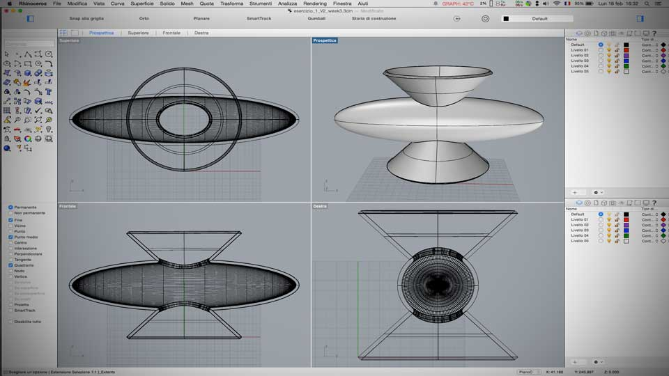
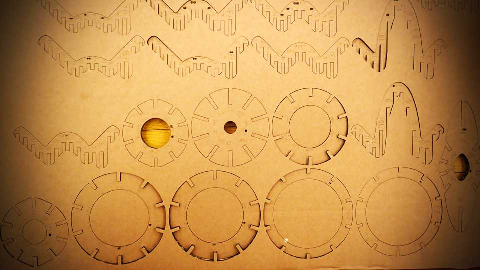
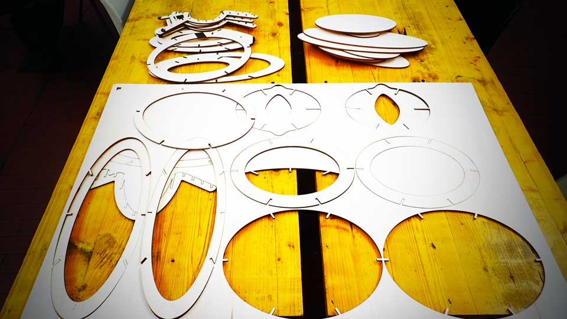

****************************************************************************************************************
****************************************************************************************************************
This week I started the physic realization of the model that I designed last week.
The first step is to realize a cardboard miniature, until to build the "original" wood model.

With the help of 123D Make software, a real simple software that help to turn 3D models into 2D build plans, I try to decompose my solid, in horizontals and verticals slides. I have the impression that use this soft is not real instructive. Everything is automatized.
Unfortunately, just until cutting the model, I realized that the cardboard that I have found have a different thickness compared to the set up one in the Rhino project.
My original Rhino project was designed for use 4mm thickness material. The cardboard that I have found was 5.5mm.
Given the short deadline, I have decided to do the laser cut however.
After same test I have setting our Spirit GLS in the following way:
*** Black engraving line: speed 80% power 100%
*** Red cutting line: speed 6% power 100%

The result has been, obviously, that was not possible to assemble the parts of my lamp.
Good heavens!!! I need a solution.
Whit a really analogical system, a rolling pin, I decided to try to flatten the parts of my cardboard structure. --(Please avoid easy ironies respect my Italian origin :-)--
The miniature was assembled in over 2 hours of work.
The second step is to realize the plywood model
After a cutting test I have setting the laser cutter in the following way:
*** Black engraving line: speed 100% power 30%
*** Red cutting line: speed 50% power 100%

In this case the process has worked well, and the assemblage is simple.
The process of assemblage is documented follow whit a little gif animation.